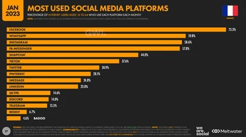
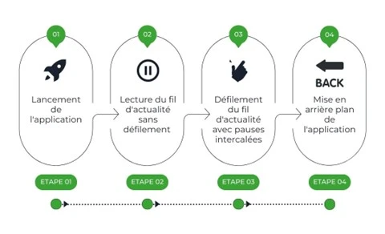
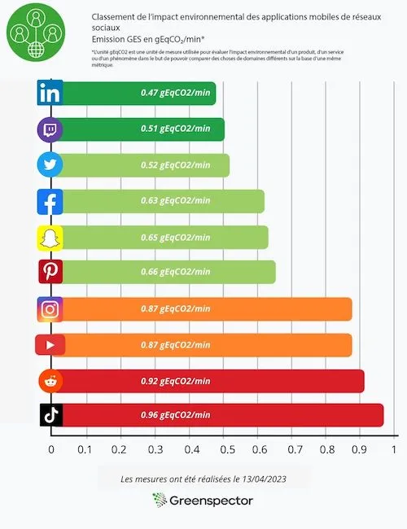
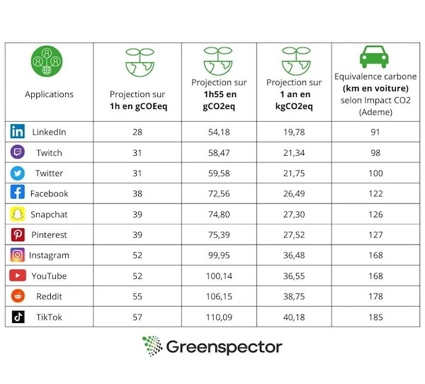
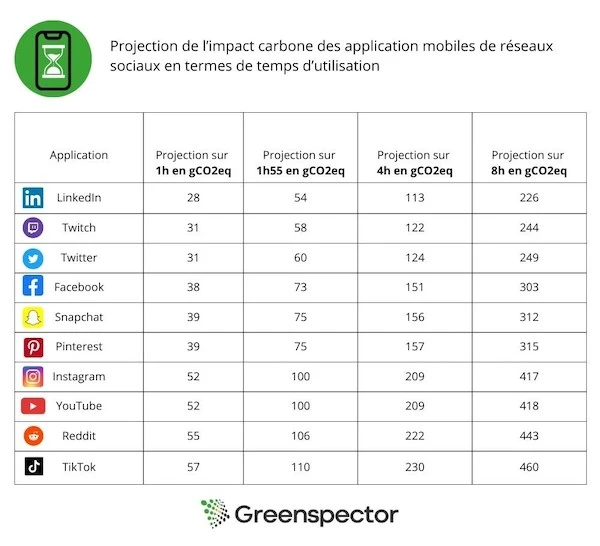
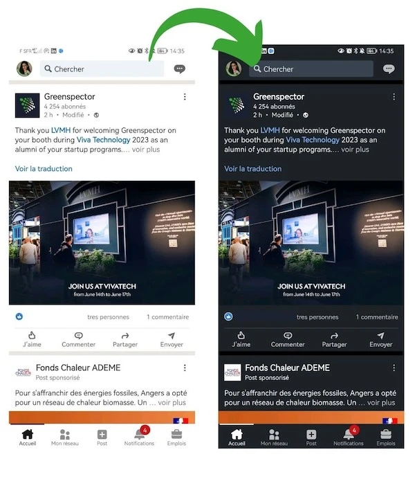
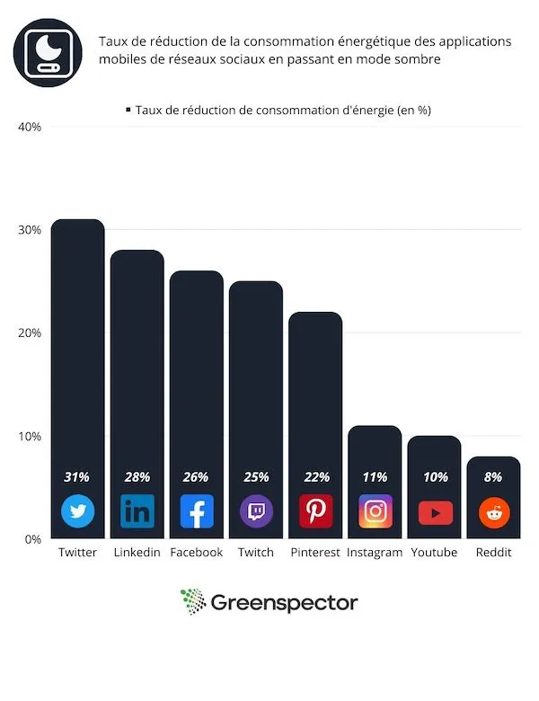

Introduction
Les usages et les fonctionnalités des réseaux sociaux se développent et leurs communautés ainsi que les moments de consommation sur nos écrans augmentent avec ces usages.
Les tendances, le marketing d’entreprise, les nouveaux canaux d’influence sont autant de facteurs de multiplication de connexion des utilisateurs et de leur temps d’utilisation.
Dans le Digital report France 2023 de We are social, on évalue à 92,6% les Français connectés à Internet. C’est une augmentation de +1% par rapport à 2022, soit 600 000 personnes, dont plus de 80,5% sont présents sur les réseaux sociaux.
L’impact environnemental généré par les réseaux sociaux évolue avec l’augmentation du nombre de personnes et du temps passés sur les applications. Ceci implique un niveau de responsabilité plus fort sur ces services numériques massivement utilisés pour évaluer et réduire leurs impacts générés. Existe-t-il dans le monde un réseau social éco-responsable ? Comment “conscientiser” les éditeurs d’applications, peut-être même leurs utilisateurs ? Pour cela, rien de tel qu’un petite mesure des consommations et de projection d’impacts pour répondre, humblement à ces 2 questions.
Comme tous ces réseaux ne fonctionne pas de la même façon, nous avons choisi de remesurer un cas d’utilisation commun à tous, à savoir, le parcours et la lecture d’un fil d’actualité des 10 applications mobile de réseaux sociaux les plus utilisés en France.
Méthodologie
Choix des réseaux sociaux étudiés
Les 10 applications de réseaux sociaux les plus populaires chez les Français sont : Facebook, Instagram, LinkedIn, Pinterest, Reddit, Snapchat, TikTok, Twitch, Twitter et Youtube. Nous avons repris les statistiques de We are social datant de janvier 2023 pour faire des projections d’impacts environnementaux.

Compte tenu du cas d’usage sélectionné, nous avons privilégié les réseaux sociaux ayant un fil d’actualité, ce qui exclut des applications de messagerie, type Whatsapp, Messenger, Imessage, Skype, Discord et Telegram. Vous les retrouverez sans doute dans un prochain article 😉
Définition du parcours utilisateur
Nous avons fait évoluer le parcours utilisateur en réalisant un scénario de défilement du fil d’actualité comportant les étapes suivantes
Etape 1 : lancement de l’application
Etape 2 : lecture du fil d’actualité sans défilement (30 sec)
Etape 3 : défilement du fil d’actualité avec des pauses intercalées.
Etape 4 : mise en arrière-plan de l’application (30 sec)

Ce parcours comporte un scroll de 2 secondes suivi d’une seconde de lecture (pause) le tout répété et pondéré sur une durée de 1 minute.
Concernant Snapchat, son fonctionnement nous a obligé à considérer un scénario de clic et non de scroll, mais ne remettant pas en cause les temps de pause et de défilement de contenu. De plus, le fil d’actualité choisi est la page de stories, qui n’est pas la page d’accueil de l’application. Afin d’avoir des scénarios comparables, l’étape d’accès à la page de stories n’a pas été mesurée sur ce parcours et donc n’a pas été comprise dans l’impact généré.
Les pauses lors du défilement du fil d’actualité simulent un comportement le plus réaliste possible de lecture.
Ce parcours ne transcrit pas des usages les plus fréquents sur ces plateformes (lecture d’un post ou d’un contenu riche associé, d’une vidéo, réaction, échangé généré, ….) mais il nous donne une indication sur le niveau de sobriété des applications.
Pour cette étude, les données ont été mesurées via notre solution Greenspector Test Runner qui permet la réalisation de tests automatisés sur smartphone en local.
Nous avons mesuré les consommations de ressources (énergie, mémoire, données) et les temps de réponse. Ces données nous ont ensuite permis d’obtenir l’impact environnemental des applications.
Nous précisons que la méthodologie employée dans le cadre de cette étude compare uniquement le défilement des fils d’actualité les plus courants. Cela induit que la comparaison n’est pas forcément équivalente car certains fils d’actualité sont centrés sur du défilement de vidéos et d’autres sur des posts multimédia (texte, image, vidéo, gif animé, etc).
Contexte de mesure
- Samsung 10, Android 10
- Réseau : Wi-Fi
- Luminosité : 50%
- Tests réalisés sur au moins 3 itérations pour fiabiliser les résultats
Hypothèses retenues pour les projections environnementales
- Localisation utilisateurs : 100% France
- Localisation serveurs : 100% monde (à défaut d’avoir les informations pour chacune des applications)
- Appareils utilisés : 100% smartphone
- Type de serveurs : 100% complexes
L’empreinte environnementale dépend de la localisation des serveurs de l’application, de leur type, de la localisation des utilisateurs et du type d’appareils qu’ils utilisent. Nous avons pris le parti d’étudier l’usage des applications uniquement sur smartphone et sur la part des utilisateurs Français.
Top et flop des applications les plus utilisées en France selon les résultats
Le graphe ci-dessous classe les différentes applications de réseaux sociaux selon l’empreinte environnementale du parcours que nous avons défini plus haut.

L’application la moins sobre
Tiktok arrive en dernière position du classement sans grande surprise. En effet, l’application est très énergivore, elle consomme à son lancement 22,4 mAh et échange beaucoup de données pendant le défilement du fil d’actualité. Cet énorme échange est notamment dû au lancement des vidéos qui tourne en permanence et aux nombreuses publicités présentes sur l’application.
L’application précharge de nombreux contenus, si l’utilisateur est hors connexion, il peut tout de même accéder aux vidéos. Tiktok charge pendant 30s après le lancement environ 5 Mo de données équivalents lors de ce test à 10 vidéos préchargées.
L’application la plus sobre
LinkedIn est l’application la moins impactante selon nos résultats. Celle-ci n’échange qu’un très faible volume de données au chargement de l’application, ainsi que lors du scroll du fil d’actualité. Le fait que le réseau social soit axé sur le partage de posts textuels avec une faible quantité de photos et vidéos explique notamment ce score. De plus, LinkedIn consomme 13,9 mAh d’énergie, soit 15% de moins que les autres applications du panel.
Les autres applications préchargent moins de contenus et souvent, moins volumineux. Une vidéo préchargée consomme plus d’énergie et génère plus d’échanges de données qu’un post de texte préchargé.
Projection sur un an de l’impact des 2 applications les plus utilisées par les Français
Toujours selon le rapport annuel de We Are Social, le temps passé sur les réseaux sociaux est en moyenne d’1h55 par jour. Quand on projette l’impact environnemental sur une année pour chaque application, l’impact environnemental représente de 20 à 40 kg eqCO2 selon le réseau social. Cela représente 185km en voiture pour le réseau le moins sobre.

Selon le site de l’Ademe, Impact CO2 qui propose un convertisseur en ligne, environ 200g CO2eq = 1km. Sont incluses les émissions directes, la construction des véhicules (fabrication, maintenance et fin de vie) et la production et distribution de carburant et d’électricité. La construction des infrastructures (routes, rails, aéroports…) n’est pas incluse dans ce calcul.
Nous avons choisi de comparer les 2 applications les plus utilisées par les Français à savoir Facebook environ 38,1M d’utilisateurs et Instagram qui compte environ 30,5M d’utilisateurs.
Le rapport énonce qu’en France, 52 millions de personnes sont présentes sur les réseaux sociaux. Facebook est le réseau social le plus populaire chez les 16-64 ans (73.3%). Si on multiplie l’impact environnemental de Facebook par le nombre d’utilisateurs français présents sur cette plateforme (env. 38,1M), cela représente plus de 24 tonnes eqCO2/min à son pic d’affluence (ou la production de 773 smartphones/min). Soit presque 1M de tonnes d’eqCO2 par an !
Instagram est le 2e réseau social le plus populaire chez les 16-64 ans après Facebook. Si on multiplie l’impact environnemental d’Instagram par le nombre d’utilisateurs français présents sur cette plateforme (58,6%), cela représente plus de 26,5 tonnes eqCO2/min (ou la production de 853 smartphones/min). Soit plus de 1,1M tonnes d’eqCO2 par an !
On constate que malgré un écart de presque 8 millions d’utilisateurs, Instagram a un impact carbone supérieur à Facebook.
Il convient de souligner que la durée consacrée aux réseaux sociaux varie en fonction du public concerné. Certains individus y consacrent moins de temps, tandis que d’autres y dédient considérablement plus, parfois jusqu’à 8 heures par jour.
Le tableau ci-dessous projette l’impact carbone en termes de temps d’utilisation.

Et si on projette à l’international ?
Pour une moyenne de temps passé sur les réseaux sociaux de 2 heures et 31 minutes tous réseaux confondus, nous faisons une estimation de la consommation de ces applications à l’échelle mondiale.
Facebook compte 2,958 milliards d’utilisateurs à travers le monde ce qui fait de lui le réseau le plus populaire encore une fois. La consommation journalière d’un utilisateur passant en moyenne 2h31 sur ce réseau serait d’environ 95g eqCO2. Pour les presque 3 milliards d’utilisateurs de Facebook qui auraient une moyenne d’utilisation de ce réseau social de 2h31 par jour, la plateforme aurait une empreinte environnementale d’usage de plus de 281 000 tonnes eqCO2/jour soit plus de 102 millions de tonnes eqCO2 à l’année !
Au niveau international, Instagram compte environ 2 milliards d’utilisateurs. Par jour, la consommation d’un utilisateur qui passerait 2h31 sur Instagram produirait environ 132g eqCO2. À l’échelle des 2 milliards d’utilisateurs, cela représenterait 262 000 tonnes eqCO2/jour, soit près de 96 millions de tonnes à l’année.
Et si on met un thème sombre ça donne quoi ?
Nous avons réalisé nos mesures une seconde fois avec les applications en mode sombre pour pouvoir comparer les impacts énergétiques engendrés.
Les mesures ont été réalisées sur un Samsung S10, détenteur d’un écran à technologie AMOLED, connue pour le fait qu’un pixel sombre sera en réalité un pixel partiellement éteint, ce qui explique que les modes sombres réduisent la consommation d’énergie. À contrario, lorsque l’écran utilise une technologie LCD, la couleur n’influence pas la consommation, expliquant pourquoi le mode sombre n’est pas plus économique en énergie que le mode clair, voir article ici.

De nos jours, de plus en plus de téléphones sont dotés de la technologie d’écran AMOLED et il devient intéressant d’activer le mode sombre pour réduire sa consommation et ainsi préserver la décharge de la batterie.
Lors de cette étude nous avons remarqué qu’uniquement 8 des 10 applications étudiées proposaient le dark mode. Snapchat et Tiktok ne le proposant pas, nous les avons exclus des mesures. Leur interface reposant sur du défilement de vidéos et photos uniquement, seuls quelques pages telles que la messagerie baisseraient la mesure de consommation d’énergie.

On peut observer que l’activation du mode sombre entraîne une diminution de la consommation d’énergie mesurée sur la batterie.
On peut constater que lorsque le dark mode est activé sur l’application, la consommation d’énergie est réduite en moyenne de 20%.
Sur les applications comportant beaucoup de texte comme Twitter LinkedIn et Facebook, le mode sombre est plus économique en énergie car il inverse les couleurs d’un bloc de texte, devenant ainsi de fines écritures blanches sur fond noir. À contrario, les images et vidéos n’auront pas leurs couleurs inversées, il y aura donc peu de différences lors de l’affichage de contenu multimédia.

Bilan
Pour cette étude, nous observons que l’impact en GES est environ deux fois plus important entre la plateforme la plus et la moins impactante.
Les applications offrant beaucoup de contenu multimédia sont très consommatrices d’énergie et demandent de nombreux échanges de données sur le réseau pour afficher ces contenus. En revanche, les contenus textuels sont beaucoup moins lourds à charger ou énergivore.
En conclusion, bien que les réseaux sociaux facilitent les échanges et l’accessibilité de l’information, ils ne sont premièrement pas totalement virtuels comme on pourrait le croire et posent la question de notre rapport à la consommation de ces applications. Les utilise-t-on réellement pour communiquer et pour une volonté de s’informer ou plutôt pour se nourrir d’une pluie d’informations et de contenu qui ne sont généralement pas désirés ou attendus ?
À l’heure où l’urgence climatique est de mise, il est temps d’examiner notre rapport à nos écrans et d’adopter des gestes écologiques, de réduire le temps passé en ligne et d’activer le mode sombre sur les applications mobiles.
Si vous êtes éditeurs d’applications, vous avez aussi votre rôle à jouer ! Voici quelques axes d’amélioration pour réduire l’impact :
- Mettez le mode sombre par défaut lors de téléchargement de l’application
- Évitez le pré chargement massif de contenu lourd
- Evitez les démarrages automatiques de vidéos ou le re-lancement automatique à la fin de vidéos
Sources
Pour les statistiques d’utilisation des réseaux sociaux :
https://wearesocial.com/fr/blog/2023/02/digital-report-france-2023-%f0%9f%87%ab%f0%9f%87%b7/
Pour les équivalences en termes d’impact carbone :